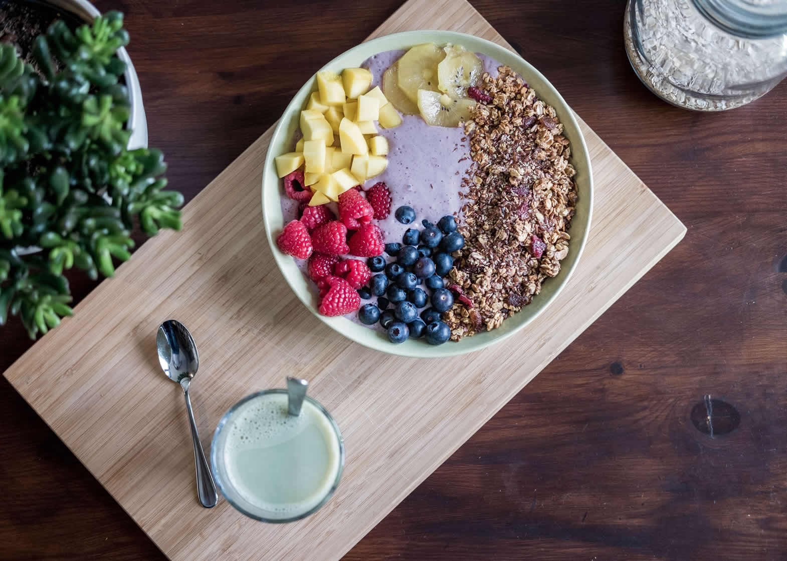
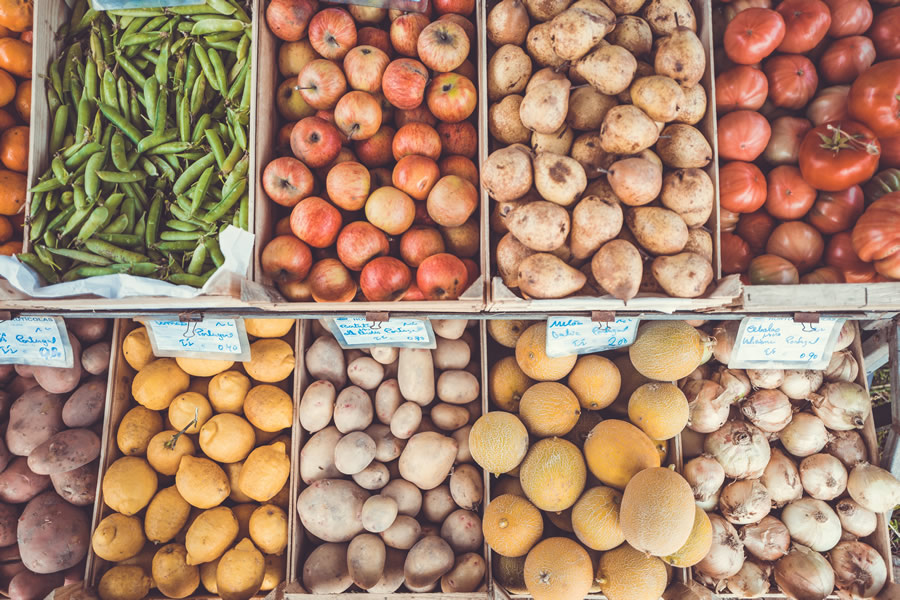

Week 5
Carbohydrates
There are two sorts of Carbohydrates, complex and simple.
Complex Sources.
Beans, peas, potatoes, and grains like oats, rice, and barley.
Fiber makes you feel full and is also indigestible, sweeping toxins out of the system. Good sources include many starchy foods like beans, fruits, and vegetables, whole grains and nuts. Add fiber to the diet slowly to decrease the risk of stomach upset.
Simple Sources.
Sugars are also referred to as simple carbohydrates. They occur naturally in fruits and milk and are also added to many foods in the form of cane sugar, honey, and maple syrup. They also appear as refined carbohydrates, as with white bread, white pasta or many bowls of cereal. Although these foods technically are carbs, they're not ideal versions. They have much less nutrition than whole complex carbs, leading to possible weight gain, diabetes, and heart disease.
Because your body sees carbs as its preferred energy source. In the body, carbs are broken down and converted to glucose and other sugars needed to supply tissues and organs with the fuel they need to perform necessary functions. If your body doesn't get enough glucose, you can experience low blood sugar or hypoglycemia. This may make you feel physically and mentally fatigued, shaky, dizzy or lightheaded, and it can decrease your performance during exercise or everyday tasks.
If no carbohydrates are supplied in the diet, the body looks to other sources, including proteins and fats. This occurs during low-carb diets, for example. While carbs are the body's most efficient energy source, fats are the least efficient. Protein has more important work to do; its main role is to supply amino acids to support muscle. If proteins are instead forced to work as glucose providers, they are not able to feed the muscles. Your brain needs especially need carbs to function properly.
If you don’t have enough of them, your ability to think, learn, and remember stuff will decrease because neurotransmitters in your brain will not have enough glucose to synthesize properly.
Be careful what you label as a complex carb and a simple carb, For example, fresh cherries provide ample sugars, and saltine crackers provide just complex carbs. Few would argue that highly processed crackers are more nutritious than fresh cherries.
How Simple and Complex Carbs are very similar as both types yield glucose through digestion or metabolism; both work to maintain your blood glucose; both provide the same number of calories; and both protect your body from protein breakdown and ketosis. The nutrient density of our food choices is far more critical.
So when we Compare our Sources of Carbohydrates There are 3 main tools we can use.
Glycemic Index.
This measures the speed at which a carbohydrate can be broken down and converted into glucose. A high GI food is broken down very quickly, this can be useful for during times of intense physical activity, however, if a large portion of your diet is high GI it can lead to spikes and drop-offs in energy levels. Low-GI foods take much longer to be digested, giving your body a steady flow of energy throughout the day.
Fibre
Fibre is a great tool for aiding weight loss and is only found in plant-based foods such as whole grains, lentils and fruit, and vegetables. Fiber can help you feel fuller for longer at it naturally lowers the GI of any meal it is a part of and because it is not digestible does not count towards your daily calorie count.
Nutrient content.
Most of our nutrients are sourced from our intake of carbohydrates. Fruit and vegetables are full of fiber, vitamins, and minerals and are also high in carbohydrates. So if you are eating a low carb diet beware you will need to find those nutrients from another source.
When choosing carbohydrate focus on eating ones that are high in fiber and low GI keeping you fuller for longer.
Get Creative in your kitchen this week with these Complex carbohydrate and high Fibre meals.
